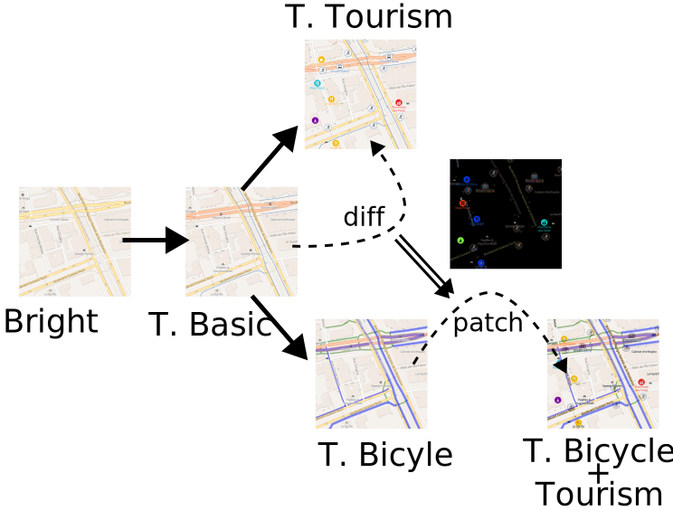

<!DOCTYPE html>
<html lang="en">
  <head>
    <meta charset="utf-8" />
    <meta name="viewport" content="width=device-width, initial-scale=1.0, maximum-scale=1.0, user-scalable=no" />

    <title>Styles et tuiles vectorielles chez Teritorio</title>
    <link rel="shortcut icon" href="./favicon.ico" />
    <link rel="stylesheet" href="./dist/reset.css" />
    <link rel="stylesheet" href="./dist/reveal.css" />
    <link rel="stylesheet" href="./dist/theme/white.css" id="theme" />
    <link rel="stylesheet" href="./css/highlight/zenburn.css" />


  </head>
  <body>
    <div class="reveal">
      <div class="slides"><section  data-markdown><script type="text/template">


&nbsp;

## Styles et tuiles
## vectorielles
## chez Teritorio

&nbsp;

SotM-FR Nantes 2022

Frédéric Rodrigo - CC-By-SA Teritorio 2022

<!-- www.teritorio.fr -->
</script></section><section  data-markdown><script type="text/template">
## Tuiles et Styles Vectoriels ?

- Tuiles d'**Attributs** et de **Géométries** vectorielles, binaires
- Styles de **rendu** des tuiles **coté client**

Avantages
- **1 tuile** → **N styles**
- Fluidité, Rotation, Sélection, Filtre…
- Interaction avec les données
</script></section><section ><section data-markdown><script type="text/template">
## Ontologies Tourisme et Ville

_Ontologies : ensemble des concepts_

_POI : `amenity`, `leasire`, `shop`, `craft`…_

Organisation des POI
- Niveaux : Super-classe, Classe, [Sous-classe]
- Attributs
  - Tags OSM
  - Label multilingue
  - Style : ⬤ ◯ •
  - Zoom min
  - Priorité d’affichage entre classes ("`z-index`")
</script></section><section data-markdown><script type="text/template">
| Super-classe, Classe, Sous-classe                     | Prio. | Zoom | Style | Tags OSM           |
|-------------------------------------------------------|-------|------|-------|--------------------|
| products                                              |       |      |       |                    |
| &nbsp;&nbsp;&nbsp;craft                               |       |      |       |                    |
| &nbsp;&nbsp;&nbsp;&nbsp;&nbsp;&nbsp;beekeeper         | 400   | 15   | ⬤     | craft=beekeeper    |
| &nbsp;&nbsp;&nbsp;&nbsp;&nbsp;&nbsp;basket&nbsp;maker | 500   | 17   | ⬤     | craft=basket_maker |


[teritorio-tourism.json](https://vecto.teritorio.xyz/data/teritorio-tourism-ontology-latest.json)

[teritorio-city.json](https://vecto.teritorio.xyz/data/teritorio-city-ontology-latest.json)
</script></section><section data-markdown><script type="text/template">
## 1 POI ontologie → 1 icone

- 350 icones
- +&nbsp;90 icones hors ontologies
- Licence : SIL Open Font License, Version 1.1.
- https://github.com/teritorio/font-teritorio

<iframe src="https://unpkg.com/@teritorio/font-teritorio@2.1.0/teritorio/teritorio.html" style="width: 100%; height: 400px"></iframe>
</script></section></section><section  data-markdown><script type="text/template">
## Production de tuiles

- OpenMapTiles, couche de données :
  - Standards
  - POI : Ontologies
  - Extra : vélo

→ Tout dans un seul jeu de tuiles

Générateur de couches OMT depuis les ontologies
https://github.com/teritorio/openmaptiles-builder
</script></section><section ><section data-markdown><script type="text/template">
## Styles Teritorio

- [OSM Bright](https://github.com/openmaptiles/osm-bright-gl-style)
    - [Teritorio Basic](https://github.com/teritorio/teritorio-basic-gl-style)
        - [Teritorio Tourism](https://github.com/teritorio/teritorio-tourism-gl-style) POI, grands icones
            - [Teritorio Tourism Basic](https://github.com/teritorio/teritorio-tourism-basic-gl-style) petits icones
        - [Teritorio City](https://github.com/teritorio/teritorio-city-gl-style) POI, grands icones
            - [Teritorio City Basic](https://github.com/teritorio/teritorio-tourism-basic-gl-style) petits icones
        - [Teritorio Bicycle](https://github.com/teritorio/teritorio-bicycle-gl-style) Équipements et réseaux
- [Satellite-Hybrid](https://github.com/teritorio/satellite-hybrid-gl-style)
- [OpenStreetMap Carto](https://github.com/teritorio/openstreetmap-carto-gl-style)

<br/>
<span style="font-size: 50%">
Icones et couleurs depuis les ontologies
<a href="https://github.com/teritorio/teritorio-gl-style-builder">https://github.com/teritorio/teritorio-gl-style-builder</a>
</span>
</script></section><section data-markdown><script type="text/template">
<h4 style="font-size:50%">Style Teritorio Tourisme</h4>
<iframe src="https://vecto.teritorio.xyz/styles/teritorio-tourism-latest/?vector#18.62/47.2176569/-1.542327" style="width: 100%; height:600px"></src>
</script></section></section><section ><section data-markdown><script type="text/template">
## Diffusion - TileServer GL
### https://vecto.teritorio.xyz/

- Style Vectoriels
- Tuiles Vectorielles
  - OpenMapTiles + Couche Teritorio
  - Ombrage dynamique / relief 3D
  - Courbes de niveaux
</script></section><section data-markdown><script type="text/template">
<iframe src="https://vecto.teritorio.xyz/" style="width: 100%; height:650px"></iframe>
</script></section></section><section ><section data-markdown><script type="text/template">
## Visualisation

🥇 MapLibre GL - 🥈 Mapbox GL - 🥉 OpenLayer

- Plugin MapLibre / Mapbox GL
  - styles Teritorio : manupilation des POI, grand, petit, par catégories
  - Langues

https://github.com/teritorio/teritorio-map
https://github.com/teritorio/openmaptiles-gl-language
</script></section><section data-markdown><script type="text/template">
<iframe src="https://teritorio.github.io/teritorio-map/demo-fr.html#16/43.439148/-1.588654" style="width: 100%; height:650px"></iframe>
</script></section><section data-markdown><script type="text/template">
## Visualisation

Vido : app carto tourisme et territoires

- Recherche
- Exploration
- Partage
</script></section><section data-markdown><script type="text/template">
### carte.seignanx.com

<iframe src="https://carte.seignanx.com/12100/18093#map=11.27/43.5573/-1.4703" style="width: 100%; height:650px"></iframe>
</script></section></section><section ><section data-markdown><script type="text/template">
### Multiplexeur de Tuiles et Styles GL

- Tuiles
  - Remplacement / Ajout de couches de données
  - Remplacement thématique dans une couche : POI OSM par POI client

- Styles
  - Diff/Path : croiser les concepts entre les styles
    - Teritorio Vélo × Tourisme

https://github.com/teritorio/v-mux-gl
</script></section><section data-markdown><script type="text/template">

</script></section><section data-markdown><script type="text/template">

</script></section></section><section ><section data-markdown><script type="text/template">
## Plan Papier
### Depuis styles vectoriels

- Support dans QGIS
- Conversion en SVG
- Éditorialisation à la main
- Génération index des rues et POI

<aside class="notes"><p>→ Continuité entre le web et le papier
→ Contribution et Qualité des données OSM
→ Réalisation ou Formation à la réalisation + Kit graphique</p>
</aside></script></section><section data-markdown><script type="text/template">

</script></section></section><section  data-markdown><script type="text/template">
## Liens

- https://www.teritorio.fr
- ✅ [openmaptiles-builder](https://github.com/teritorio/openmaptiles-builder)
- ✅ [Styles Teritorio](https://github.com/teritorio/teritorio-basic-gl-style), ✅ [teritorio-gl-style-builder](https://github.com/teritorio/teritorio-gl-style-builder)
- ✅ [Icones / Police Teritorio](https://github.com/teritorio/font-teritorio) ([NPM](https://www.npmjs.com/package/@teritorio))
- ✅ MapLibre GL : [openmaptiles-gl-language](https://github.com/teritorio/openmaptiles-gl-language), [teritorio-map](https://github.com/teritorio/teritorio-map)
- 🔸 Vido: re-dev / nouveaux sous-projets déjà libres
- ✅ [Multiplexeur de Tuiles et Styles GL](https://github.com/teritorio/v-mux-gl)
- 🔸 Plan papier - pas encore libre

</script></section><section  data-markdown><script type="text/template">
Styles et tuiles vectorielles chez Teritorio

<span style="font-size:70%">
La présentation et tous les liens

https://frodrigo.github.io/SotM-FR-Teritorio-Tuiles-Vecto
</span>


</script></section></div>
    </div>

    <script src="./dist/reveal.js"></script>

    <script src="./plugin/markdown/markdown.js"></script>
    <script src="./plugin/highlight/highlight.js"></script>
    <script src="./plugin/zoom/zoom.js"></script>
    <script src="./plugin/notes/notes.js"></script>
    <script src="./plugin/math/math.js"></script>
    <script>
      function extend() {
        var target = {};
        for (var i = 0; i < arguments.length; i++) {
          var source = arguments[i];
          for (var key in source) {
            if (source.hasOwnProperty(key)) {
              target[key] = source[key];
            }
          }
        }
        return target;
      }

      // default options to init reveal.js
      var defaultOptions = {
        controls: true,
        progress: true,
        history: true,
        center: true,
        transition: 'default', // none/fade/slide/convex/concave/zoom
        plugins: [
          RevealMarkdown,
          RevealHighlight,
          RevealZoom,
          RevealNotes,
          RevealMath
        ]
      };

      // options from URL query string
      var queryOptions = Reveal().getQueryHash() || {};

      var options = extend(defaultOptions, {"controls":true,"progress":true}, queryOptions);
    </script>


    <script>
      Reveal.initialize(options);
    </script>
  </body>
</html>
